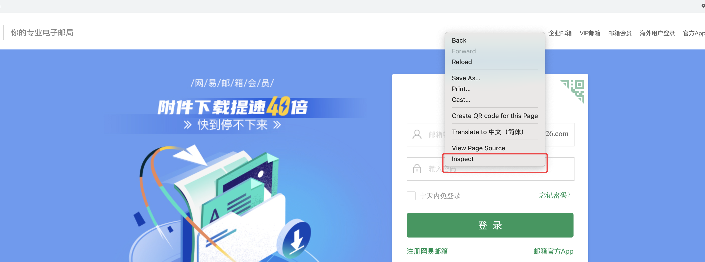
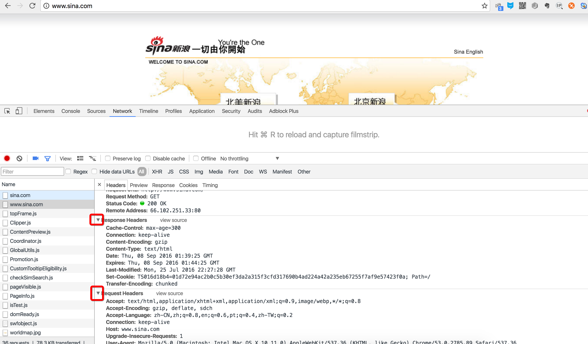
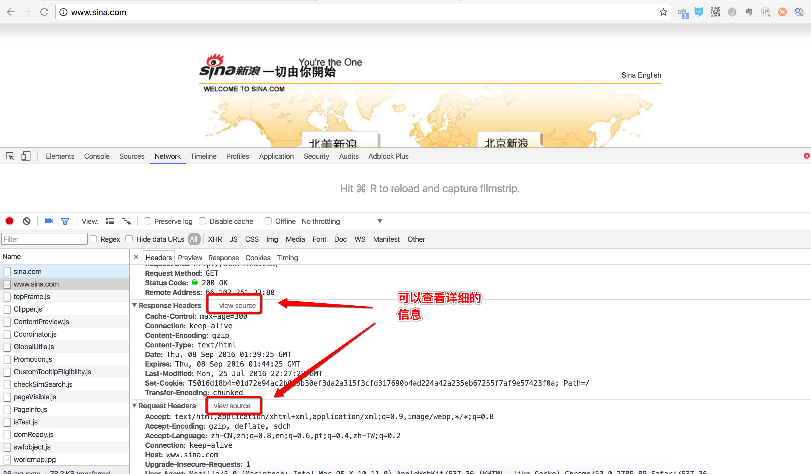
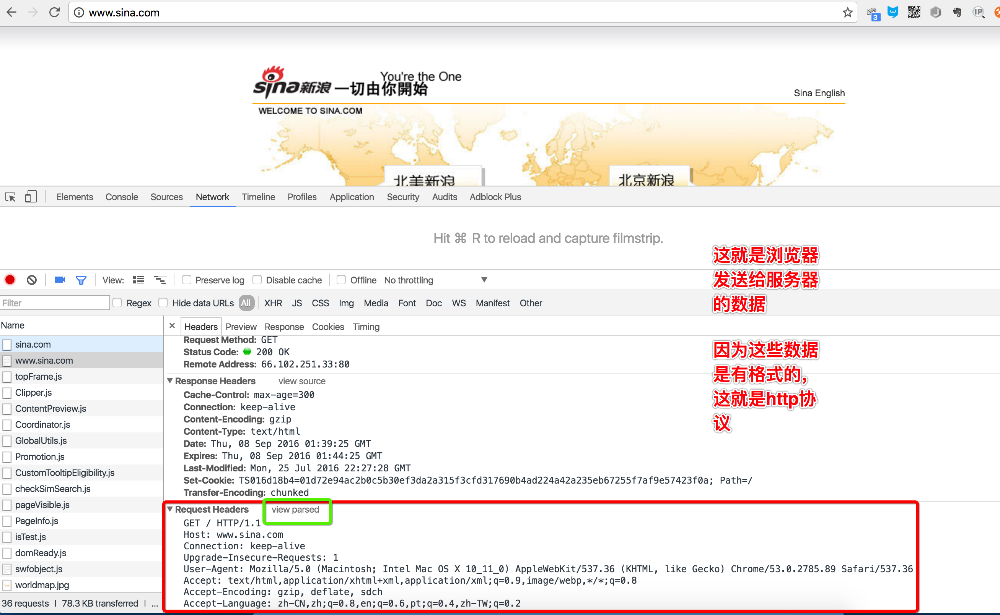
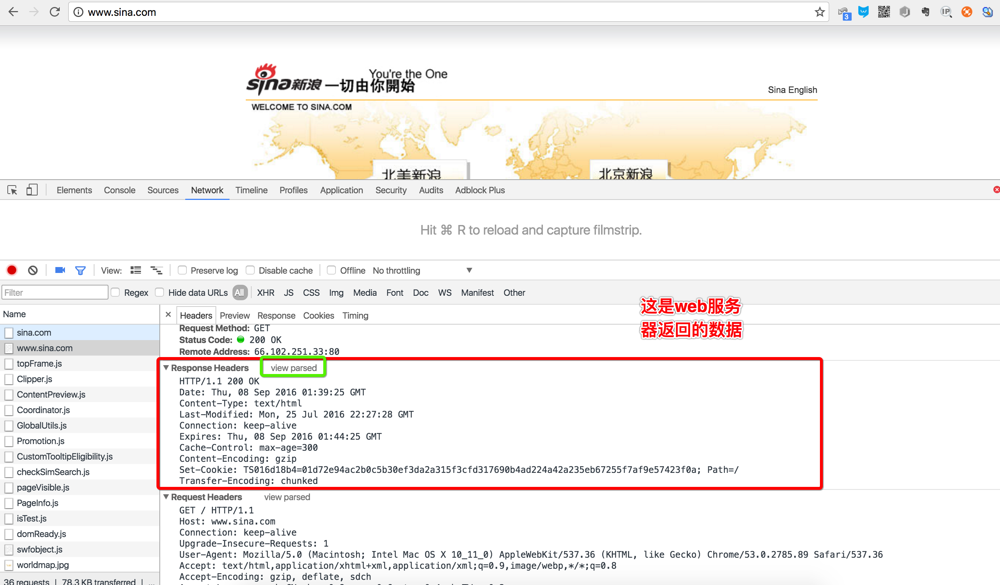
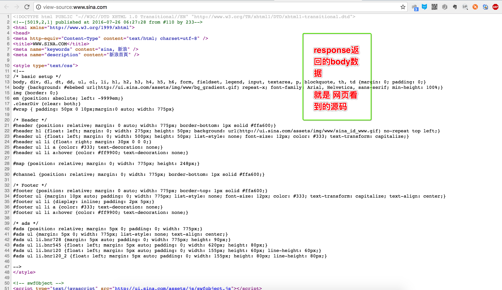
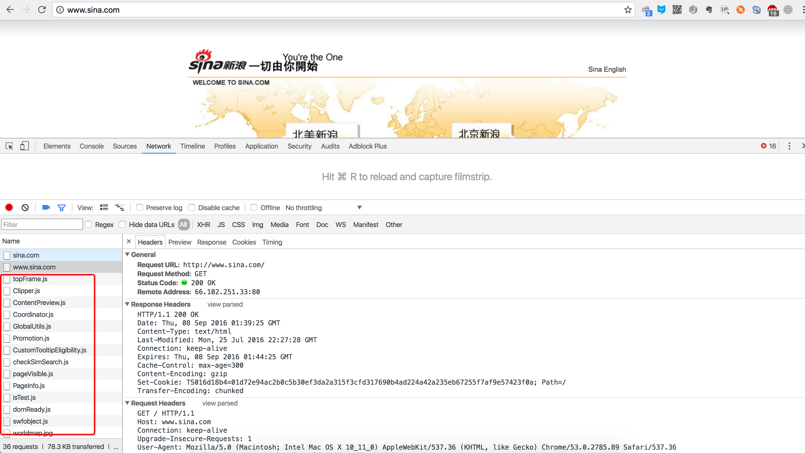
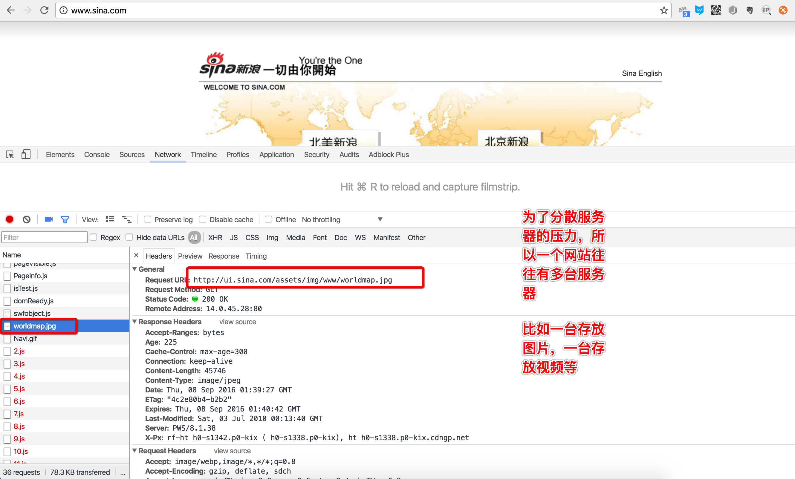

http协议
1. 使用谷歌/火狐浏览器分析
在Web应用中，服务器把网页传给浏览器，实际上就是把网页的HTML代码发送给浏览器，让浏览器显示出来。而浏览器和服务器之间的传输协议是HTTP，所以：
- HTML是一种用来定义网页的文本，会HTML，就可以编写网页；
- HTTP是在网络上传输HTML的协议，用于浏览器和服务器的通信。
Chrome浏览器提供了一套完整地调试工具，非常适合Web开发。
安装好Chrome浏览器后，打开Chrome，在菜单中选择“视图”，“开发者”，“开发者工具”，就可以显示开发者工具：

说明
- Elements显示网页的结构
- Network显示浏览器和服务器的通信
我们点Network，确保第一个小红灯亮着，Chrome就会记录所有浏览器和服务器之间的通信：

2. http协议的分析
当我们在地址栏输入www.sina.com时，浏览器将显示新浪的首页。在这个过程中，浏览器都干了哪些事情呢？通过Network的记录，我们就可以知道。在Network中，找到www.sina.com那条记录，点击，右侧将显示Request Headers，点击右侧的view source，我们就可以看到浏览器发给新浪服务器的请求：
2.1 浏览器请求


说明
最主要的头两行分析如下，第一行：
GET / HTTP/1.1
GET表示一个读取请求，将从服务器获得网页数据，/表示URL的路径，URL总是以/开头，/就表示首页，最后的HTTP/1.1指示采用的HTTP协议版本是1.1。目前HTTP协议的版本就是1.1，但是大部分服务器也支持1.0版本，主要区别在于1.1版本允许多个HTTP请求复用一个TCP连接，以加快传输速度。
从第二行开始，每一行都类似于Xxx: abcdefg：
Host: www.sina.com
表示请求的域名是www.sina.com。如果一台服务器有多个网站，服务器就需要通过Host来区分浏览器请求的是哪个网站。
2.2 服务器响应
继续往下找到Response Headers，点击view source，显示服务器返回的原始响应数据：

HTTP响应分为Header和Body两部分（Body是可选项），我们在Network中看到的Header最重要的几行如下：
HTTP/1.1 200 OK
200表示一个成功的响应，后面的OK是说明。
如果返回的不是200，那么往往有其他的功能，例如
- 失败的响应有404 Not Found：网页不存在
- 500 Internal Server Error：服务器内部出错
- ...等等...
Content-Type: text/html
Content-Type指示响应的内容，这里是text/html表示HTML网页。
请注意，浏览器就是依靠Content-Type来判断响应的内容是网页还是图片，是视频还是音乐。浏览器并不靠URL来判断响应的内容，所以，即使URL是
http://www.baidu.com/meimei.jpg，它也不一定就是图片。
HTTP响应的Body就是HTML源码，我们在菜单栏选择“视图”，“开发者”，“查看网页源码”就可以在浏览器中直接查看HTML源码：

浏览器解析过程
当浏览器读取到新浪首页的HTML源码后，它会解析HTML，显示页面，然后，根据HTML里面的各种链接，再发送HTTP请求给新浪服务器，拿到相应的图片、视频、Flash、JavaScript脚本、CSS等各种资源，最终显示出一个完整的页面。所以我们在Network下面能看到很多额外的HTTP请求。

3. 总结
3.1 HTTP请求
跟踪了新浪的首页，我们来总结一下HTTP请求的流程：
3.1.1 步骤1：浏览器首先向服务器发送HTTP请求，请求包括：
方法：GET还是POST，GET仅请求资源，POST会附带用户数据；
路径：/full/url/path；
域名：由Host头指定：Host: www.sina.com
以及其他相关的Header；
如果是POST，那么请求还包括一个Body，包含用户数据
3.1.1 步骤2：服务器向浏览器返回HTTP响应，响应包括：
响应代码：200表示成功，3xx表示重定向，4xx表示客户端发送的请求有错误，5xx表示服务器端处理时发生了错误；
响应类型：由Content-Type指定；
以及其他相关的Header；
通常服务器的HTTP响应会携带内容，也就是有一个Body，包含响应的内容，网页的HTML源码就在Body中。
3.1.1 步骤3：如果浏览器还需要继续向服务器请求其他资源，比如图片，就再次发出HTTP请求，重复步骤1、2。
Web采用的HTTP协议采用了非常简单的请求-响应模式，从而大大简化了开发。当我们编写一个页面时，我们只需要在HTTP请求中把HTML发送出去，不需要考虑如何附带图片、视频等，浏览器如果需要请求图片和视频，它会发送另一个HTTP请求，因此，一个HTTP请求只处理一个资源(此时就可以理解为TCP协议中的短连接，每个链接只获取一个资源，如需要多个就需要建立多个链接)
HTTP协议同时具备极强的扩展性，虽然浏览器请求的是http://www.sina.com的首页，但是新浪在HTML中可以链入其他服务器的资源，比如<img src="http://i1.sinaimg.cn/home/2013/1008/U8455P30DT20131008135420.png">，从而将请求压力分散到各个服务器上，并且，一个站点可以链接到其他站点，无数个站点互相链接起来，就形成了World Wide Web，简称WWW。

3.2 HTTP格式
每个HTTP请求和响应都遵循相同的格式，一个HTTP包含Header和Body两部分，其中Body是可选的。
HTTP协议是一种文本协议，所以，它的格式也非常简单。
3.2.1 HTTP GET请求的格式：
GET /path HTTP/1.1
Header1: Value1
Header2: Value2
Header3: Value3
每个Header一行一个，换行符是\r\n。
3.2.2 HTTP POST请求的格式：
POST /path HTTP/1.1
Header1: Value1
Header2: Value2
Header3: Value3
body data goes here...
当遇到连续两个\r\n时，Header部分结束，后面的数据全部是Body。
3.2.3 HTTP响应的格式：
200 OK
Header1: Value1
Header2: Value2
Header3: Value3
body data goes here...
HTTP响应如果包含body，也是通过\r\n\r\n来分隔的。
请再次注意，Body的数据类型由Content-Type头来确定，如果是网页，Body就是文本，如果是图片，Body就是图片的二进制数据。
当存在Content-Encoding时，Body数据是被压缩的，最常见的压缩方式是gzip，所以，看到Content-Encoding: gzip时，需要将Body数据先解压缩，才能得到真正的数据。压缩的目的在于减少Body的大小，加快网络传输。